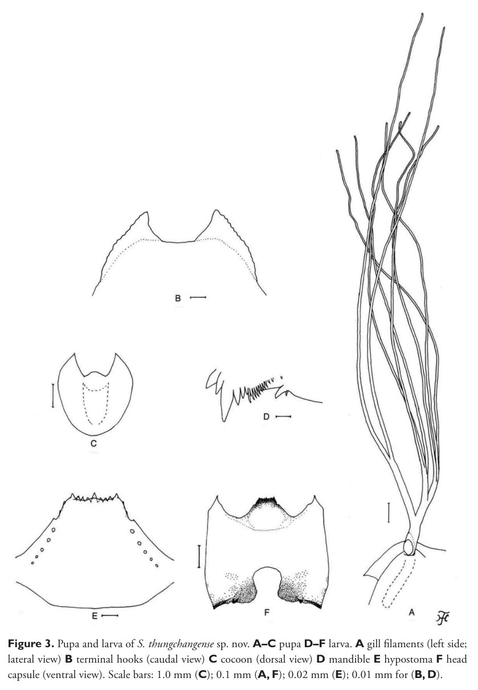
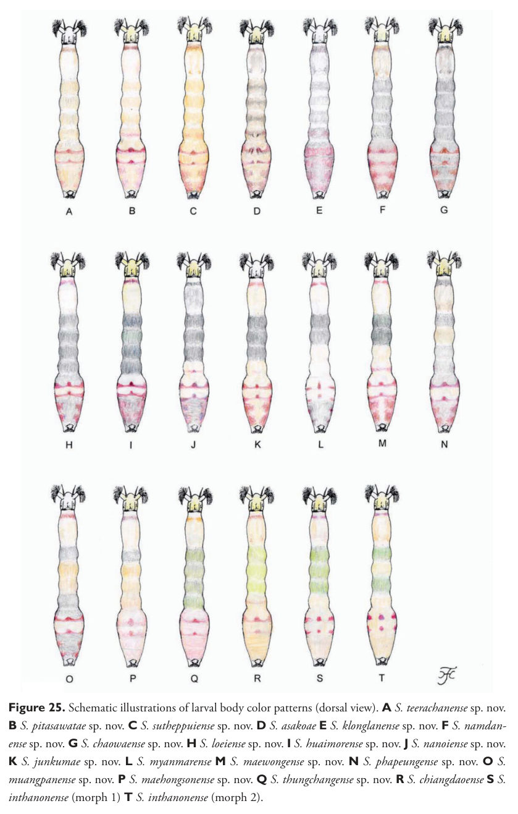

Species › Simulium › Gomphostilbia
Simulium thungchangense
| Classification | Genus Simulium, subgenus Gomphostilbia |
|---|---|
| Status | valid |
| Distribution | Thailand (Chiang Mai and Nan) (Takaoka et al. 2020) |
| Thailand | Type locality: Siribhum Waterfall, Chom Thong District, Chiang Mai Province, 1,376 m, 18°32'44.4"N 98°30'53.0"E, 24-I-2019; also Nan (Takaoka et al. 2020, pp. 55-64) |
| Diagnostic notes | S. asakoae species-group (COI subgroup III; nearly identical COI to S. udomi despite 8 vs 6 pupal gill filaments). Female: body 2.4-2.6 mm, mandible with several outer teeth, labrum 0.61-0.68x clypeus, hind tibia yellowish on >basal half, claw tooth 0.50x claw (vs 0.47x in S. chiangdaoense). Male: vermilion upper-eye facets in 9-10 vertical columns and 12 horizontal rows (vs 11-12 x 13-14 in S. asakoae), fore basitarsus 8.4-8.7x width (vs 7.1-7.4x in S. asakoae), subcosta with many hairs, hind basitarsus 1.5-1.7x hind femur (vs 1.2-1.3x in S. chaudinhense). Pupa: abdominal tergites 1-2 sparsely covered with minute tubercles, terminal hook outer margin 2.7x inner margin (vs 2.2x in S. loeiense). Larva: postgenal cleft 0.8-1.4x postgenal bridge, abdominal segments 1-4 light green/greenish grey (vs 1-2 greyish in S. chaudinhense), segments 5-8 pinkish (Takaoka et al. 2020, pp. 55-64, 147). |
| Sources | Takaoka et al. 2020 |
How it keys out
The chain of characters leading to this taxon in each key (a ready-made diagnosis).
Thailand: Simulium asakoae species-group (females) (Takaoka et al. 2020) – couplet 15a
- 1b Hair tuft of base of radial vein yellow
- 2b Sensory vesicle short to medium-long, less than 0.4 times length of third palpal segment (Fig. 1A)
- 4a Mandible with distinct teeth on outer margin (Fig. 22B)
- 5b Body length 2.4–2.6 mm
- 14b Labrum 0.61–0.68 times length of clypeus
- 15a Claw tooth 0.50 times length of claw (Fig. 1E)
Thailand: Simulium asakoae species-group (males) (Takaoka et al. 2020) – couplet 3a
Thailand: Simulium asakoae species-group (pupae) (Takaoka et al. 2020) – couplet 6b
- 1b Cocoon with or without anterodorsal bulge or short anterodorsal projection (up to ca. 1.0 mm long) extended at most up to anteroventral tips of cocoon
- 3b Dorsum of abdominal segments 1 and 2 unpigmented or light yellowish
- 5a Dorsum of abdominal segment 1 sparsely covered with minute tubercles
- 6b Outer margin of terminal hook 2.7 times length of inner margin (Fig. 3B)
Thailand: Simulium asakoae species-group (mature larvae) (Takaoka et al. 2020) – couplet 9a
Figures




